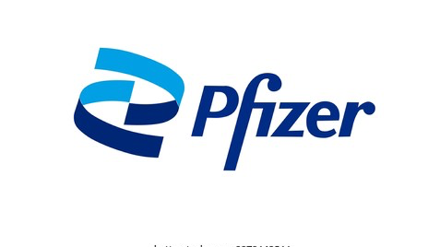
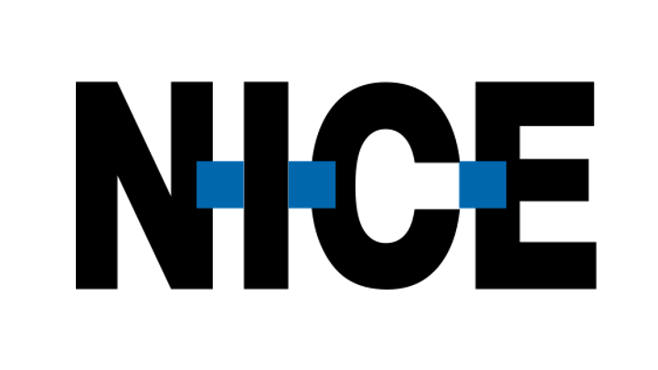

And feel you've found the right place.
Through an in-depth conversation, Dana uncovers your Career DNA: your unique motivations, strengths, and ideal work environment. From there, she helps you explore career directions, evaluate opportunities, tailor your resume and LinkedIn, prepare for interviews, and take each next step, based on what's actually right for you.
Working with us


Two stages. One continuous journey from understanding yourself to finding the right place.
Through an in-depth conversation, Dana uncovers your Career DNA: the motivations, strengths, and work environment that bring out your best.
Your Career DNA becomes the lens for every next step. Dana helps you explore career directions, evaluate specific opportunities, sharpen your positioning, tailor your resume and LinkedIn, prepare for interviews, and craft outreach, all based on what she already knows about you.
A methodology refined with over 11,000 employees, managers, and job seekers - now available as a digital, AI-guided experience.
Increase in career clarity (out of 5)
Satisfaction with the process
Would recommend
One deep understanding of you, applied to every career decision that follows.
Uncover the motivations, strengths, needs, and work environment that bring out your best.
Discover career directions you may not have considered, and understand why they could be right for you.
Bring Dana any role and see how well it matches your Career DNA: what fits, what doesn't, and what you should explore further.
Turn what makes you unique into a resume, LinkedIn profile, and professional story that genuinely represent you.
Get personalized help preparing for interviews, crafting outreach, approaching opportunities, and deciding what to do next.
Move forward with a clearer understanding of what you're looking for, and why it's right for you.
From people who already found their way
"The process with Dana was incredible. For the first time, I felt someone truly understood what I need from work. The results helped me make the right decision."
"I didn't think it was possible to be this precise about what I'm looking for. My Career DNA became a tool I use at every career crossroad. Highly recommend."
"The meeting with the coach after the conversation with Dana connected all the dots. I left with a clear action plan and a sense of confidence I didn't know before."
"After years of feeling I wasn't in the right place, this process helped me understand why. Now I know exactly what to look for and what truly matters to me."
"Dana asked questions no one had asked me before. It opened a window to things I knew about myself but couldn't articulate. I recommend this to anyone seeking clarity."
"I went through the process while happy at my job, and it helped me refine my growth within the organization. You don't need to be in crisis to get value from this."
The deep conversation with Dana depends on how far you want to go and typically takes one to three hours - at your own pace, in one sitting or several.
The stage of analyzing directions, exploring positions, adapting messaging and your resume - varies based on your needs and pace.
Not entirely. An experienced human guide from Workfully accompanies the process and provides support wherever needed - to ensure maximum precision and a complete experience.
General-purpose AI can help you with a task. Workfully.ai first builds a deep understanding of you, and uses that understanding across your entire career journey.
Dana learns what drives you, where your strengths show up, what you need from your work environment, and what makes a role genuinely right for you. That Career DNA becomes the context behind every recommendation that follows, whether you're exploring a new direction, analyzing a specific role, tailoring your resume or LinkedIn, preparing for an interview, or deciding what to do next.
Workfully.ai is also built on a career-development methodology developed and refined by Macademia through work with more than 11,000 employees, managers, and job seekers. So you're not starting a new generic AI conversation every time you need help. You're continuing a process built around a deep, persistent understanding of you.
Always. Your Career DNA helps at crossroads - choosing the right next move - and in your current role - growing, enjoying your work more, and excelling at it. You don't need to be in crisis to benefit.
Your information is used solely for extracting and defining your Career DNA, evaluating your next steps, providing support when needed, and continuous improvement of the system. We are committed to protecting your privacy.
Your personal Career DNA, a tailored analysis of directions and positions, a resume that speaks for you - and real confidence in every step toward landing the right role.
Workfully doesn't search for jobs on your behalf. It helps you know what to look for, and supports you all the way there: evaluating roles, articulating your value, and preparing your resume, LinkedIn profile and interviews.